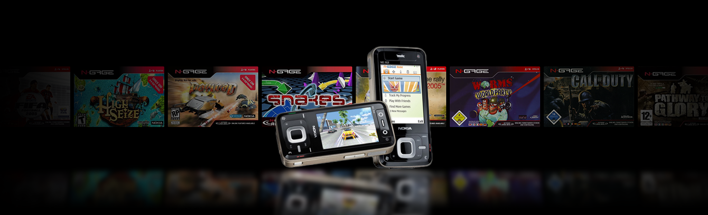

Nokia N-Gage
Reinvented N-Gage as a social mobile gaming service, Nokia's third and most considered attempt at mobile games.

The problem
The original N-Gage hardware, nicknamed the taco, sold about two million units but failed as both a phone and a console. Nokia decided to relaunch N-Gage as software across its smartphones and needed to know what would make people actually play.
The approach
Field research with Nokia's design team in San Francisco and six cities worldwide to watch how people play games on phones.
The key finding was that people mainly want to play against friends and know the skill of their opponents. The service was designed around it: see what your friends own and whether they are online, skill-based matchmaking, and try before you buy.
Results
Leadership
Led UX within IDEO's Storytelling Group, turning research into the service concept and interface.